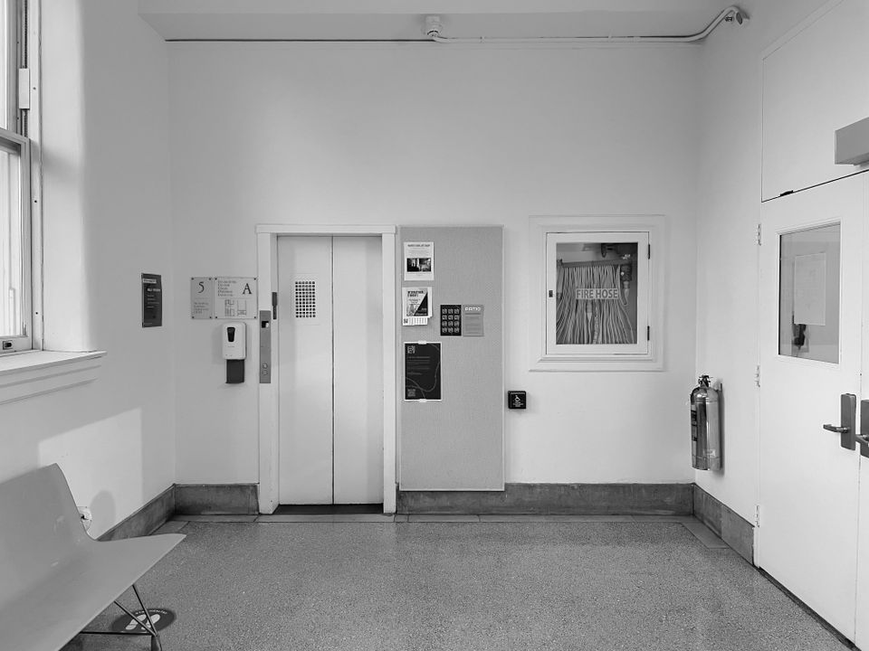

Thang máy
Kiểm tra sự cố, sửa chữa hệ thống điều khiển và bảo trì thiết bị thang máy.
Đọc bài viết
Sửa chữa và bảo trì thang máy
Thang máy dừng hoạt động, đóng mở cửa bất thường hoặc báo lỗi cần được kiểm tra theo đúng tình trạng thực tế. Việc ghi nhận thời điểm xảy ra sự cố và thông báo trên màn hình giúp kỹ thuật viên có cơ sở đánh giá ban đầu.
Dấu hiệu cần kiểm tra
Thang máy dừng tầng không chính xác, vận hành gián đoạn hoặc xuất hiện tiếng động bất thường. Cửa không đóng mở ổn định, bảng gọi tầng không phản hồi hoặc hệ thống hiển thị mã lỗi.
Nội dung tiếp nhận và kiểm tra
Kiểm tra hệ thống điều khiển, tín hiệu cửa và các thiết bị liên quan; xác định hạng mục cần sửa chữa hoặc bảo trì. Phạm vi công việc và phương án xử lý được trao đổi sau khi đánh giá thiết bị.
Thông tin cần chuẩn bị
Gửi tên hãng, loại thang, mã lỗi và hình ảnh bảng điều khiển nếu có thể ghi nhận an toàn. Khi có sự cố, ngừng sử dụng và liên hệ đơn vị kỹ thuật; không tự mở cửa tầng hoặc can thiệp tủ điện.
Lỗi thường gặp & cách xử lý tạm thời
Kiểm tra bên ngoài, theo hướng dẫn đúng model. Các bước dưới đây không thay thế việc chẩn đoán kỹ thuật.
Cửa chưa đóng vì có người hoặc hành lý chắn
Đứng gọn trong cabin, đưa hành lý ra khỏi vùng cửa và chờ cửa đóng tự động. Không dùng tay giữ hoặc cạy cửa.
Có cảnh báo quá tải
Khi cabin dừng đúng tầng và cửa mở bình thường, giảm số người hoặc hàng hóa theo tải trọng ghi trên thang.
Nút gọi không phản hồi hoặc lỗi lặp lại
Thử bấm một lần và chờ. Nếu vẫn không hoạt động, dùng lối đi khác và báo quản lý. Nếu mắc kẹt, dùng nút báo động hoặc liên lạc trong cabin; không tự thoát ra.
Nếu có mùi khét, khói, tia lửa hoặc tiếng động bất thường, ngừng sử dụng, giữ khoảng cách và gọi kỹ thuật. Không mở tủ điện hoặc tháo thiết bị.
Tham khảo: Hướng dẫn an toàn KONE.